19 Google Colab and Assignments
Google Colaboratory (Colab) is an online service that provides both computing resources and a jupyter notebook environment in both R and Python. In this page, we will discuss how to create data science assignment with google colab and embedding it in Canvas.
19.1 What is Google Colab?
Google Colab is a free, cloud-based Jupyter notebook environment that allows you to execute R/Python code through a web browser. It provides free access to RAM/CPUs/GPUs/TPUs to complete computational tasks. It is designed for data science, machine learning, and education that is integradted with Google Drive for saving and sharing notebooks.
19.2 Creating a Notebook in Google Colab
The simplest way to create a notebook in Google Colab is to go to your school’s Google Drive, click on the “New” button, click “More”, and click “Google Colaboratory”:
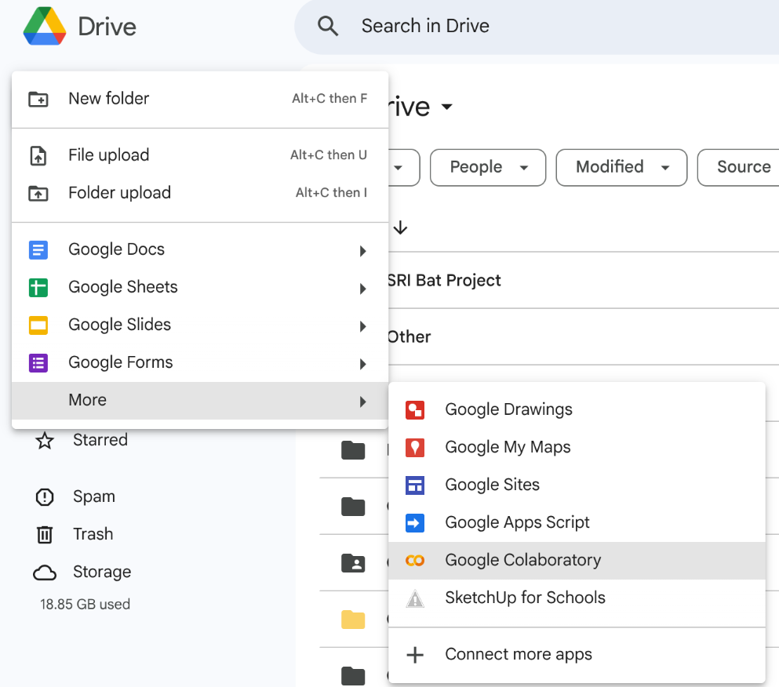
This will create a new tab in your browser that looks like this:
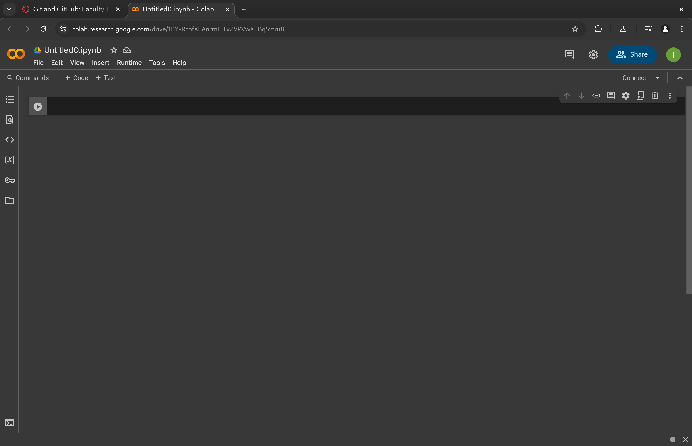
You can now create a notebook assignments with questions and code.
19.3 Google Colab Notebook
In a Google colab notebook, there are 3 main cells that you will have: text, code, and output cells.
Code Cells:
- Containa executable code.
- Output appears below the cell.
- Can be run individually or all at once.
Text Cells (Markdown Cells):
- Contain formatted text (Markdown).
- Used for explanations, documentation, etc.
Output Cells:
- Automatically generated.
- Display results of code execution.
These cells will allow to create a notebook that both explains and executes data science projects.
19.4 Choosing a Language
Google Colab will execute a notebook in 3 different languages seperately: Julia, R, and Python. To change the runtime (langauge) of a notebook, select the “Runtime” button, followed by “Change Runtime Type”:
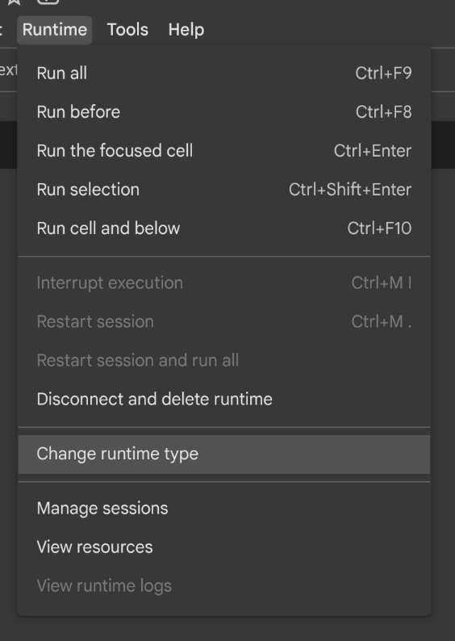
The a pop-up window will appear. You can then select which language you may want to choose from:
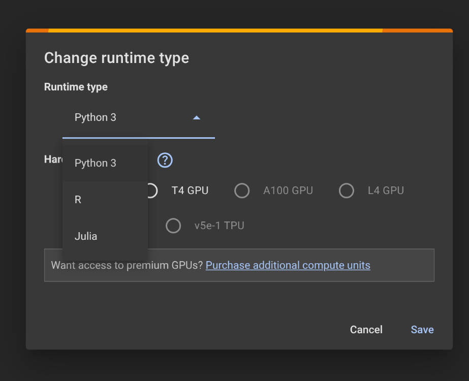
Afterwards, the notebook will only use the language you choose to execute the code cells.
19.5 Uploading a Jupyter Notebook to Google Colab
If you have a jupyter notebook (.ipynb file), you can use it in Google Colab. First, you must upload the file to Google Drive. Afterwards, you can double click on the file and it should automatically open up in Google Colab. If it does not work, you can right-click on the file, select “Open With”, and then select “Google Colaboratory”:
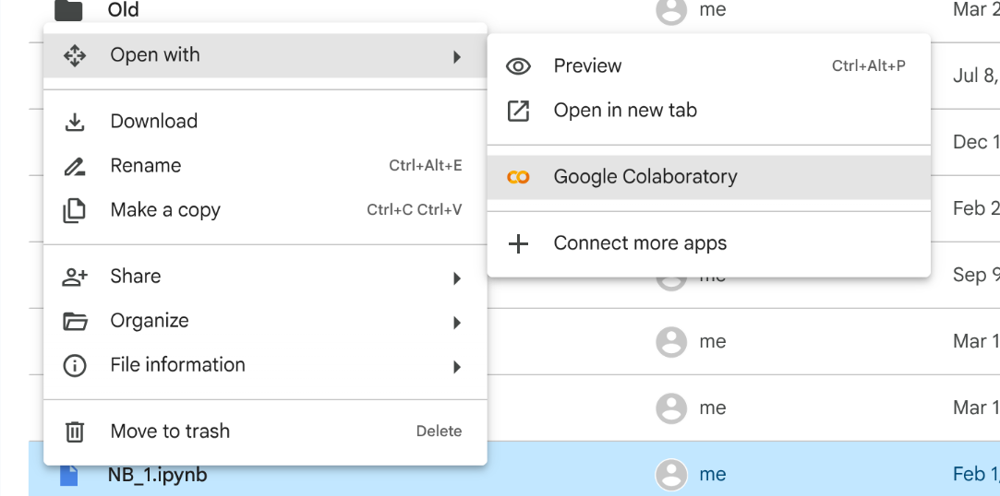
Once in Google Colab, set the “Runtime” by following the instructions here.
Afterwards, save the notebook from the “File” Menu, and “Move” the notebook to the location that you want it stored in your Google Drive. Note, your saved notebook may be in a new folder called “Google Colab” in Google Drive.
19.6 Google Assignments
If you are using Canvas at your institution and you are allowed to use Google Assignments on Canvas, you can create what is known as Google Assignment to assign a Jupyter notebook to your students. This allows your students to access and submit a notebook from the confort of their course Canvas page.
Creating an Assignment
To create a Google assignment, first go to the Assignments tab on your Course Canvas page. You will want to click on “+ Assignment” button to create a new assignmnent.
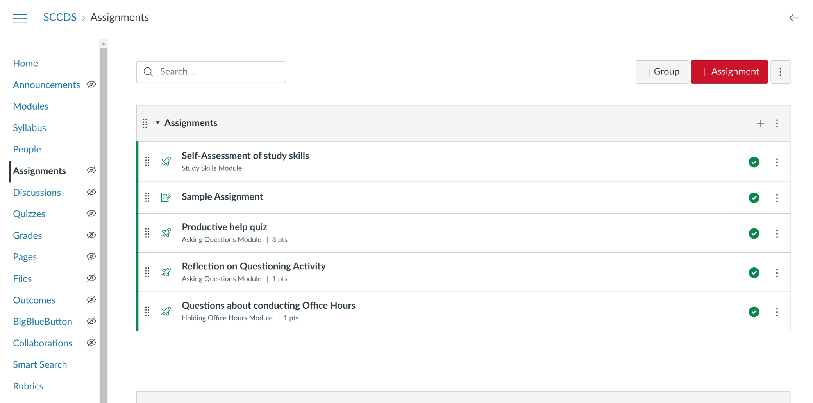
Scroll down to the “Submission Type” section and change “Online” to “External Tool” from the scroll down menu:
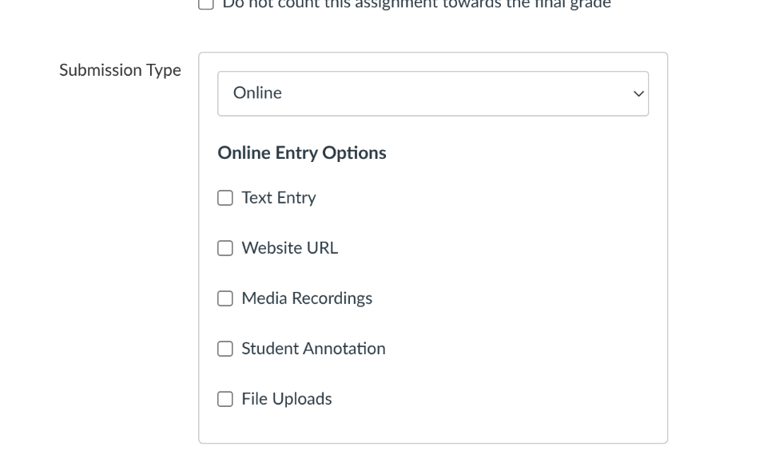
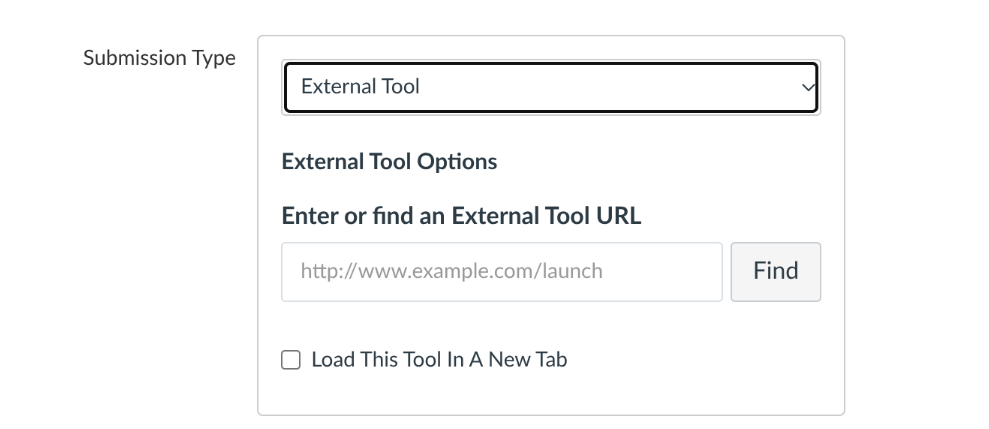
A pop-up window will appear and scroll down and select the “Google Assignments (LTI X.X)”:
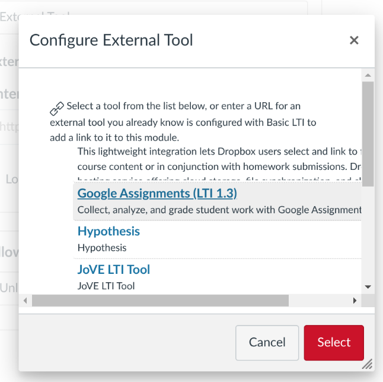
A new window will pop-up that will configure the Google Assignment. Click the “Link” button indicating that you want to use a specific Google Account.
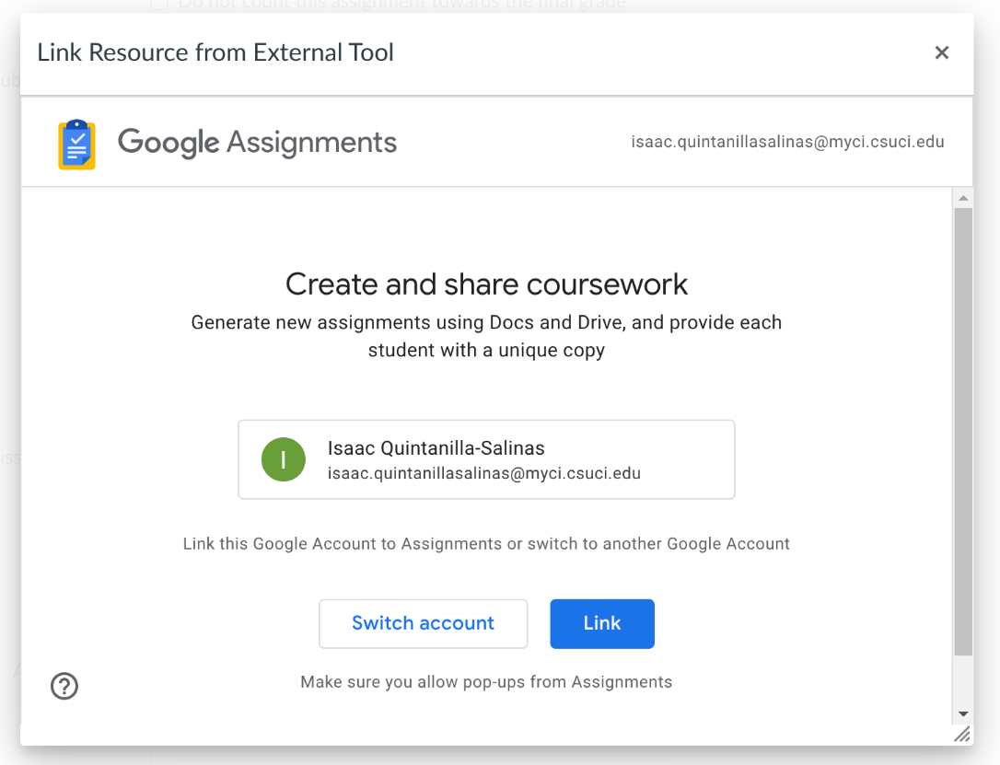
Click the “Link” button again allowing Google Assignments to access your Google Drive.
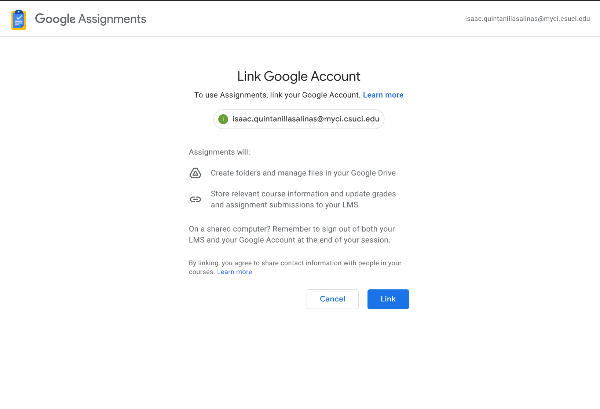
Click the “Attach” button to begin setting up
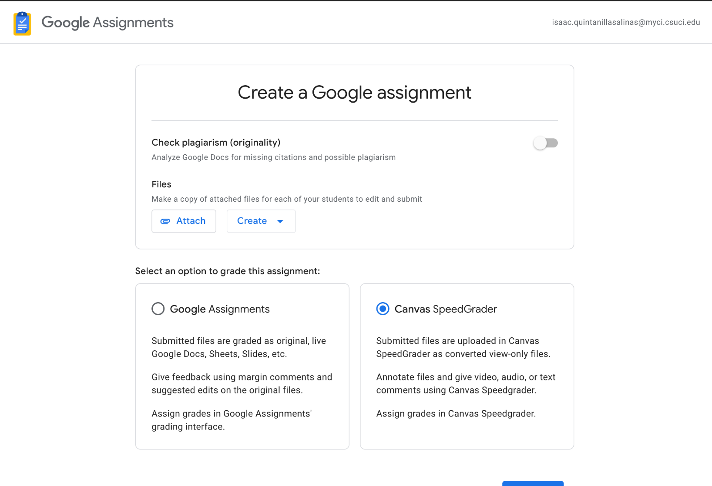
Navigate through your Google Drive where the Google Colab notebook you wish to select is located.
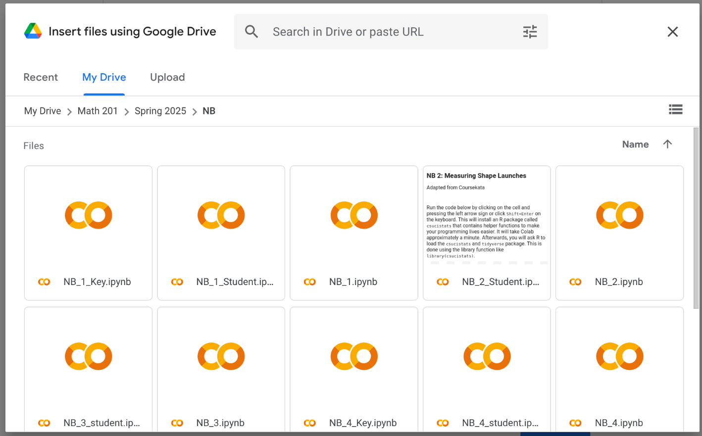
Select a notebook and click the “Add Button”
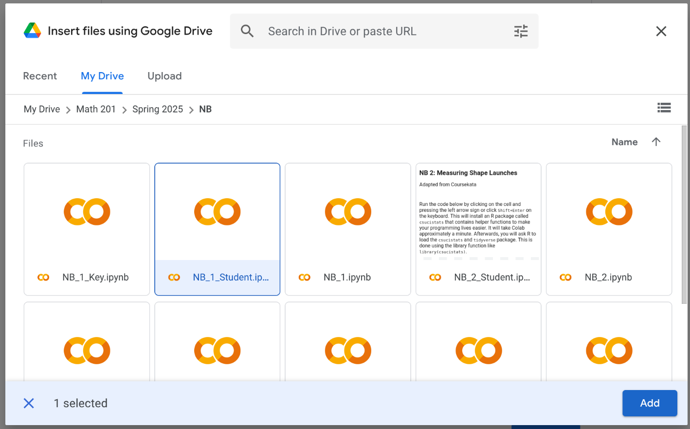
Click the “Create” button to create the assignment.
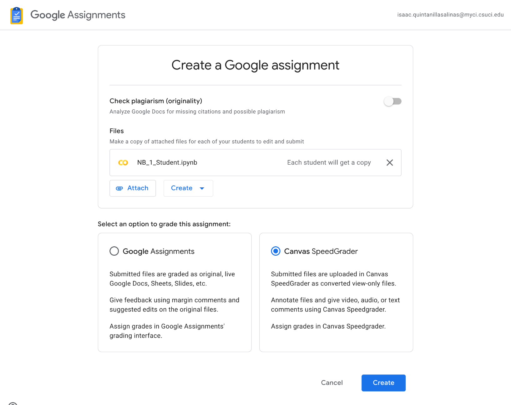
Back to assignment page on Canvas, you will see which students have started the assignment and which students submitted the assignment.
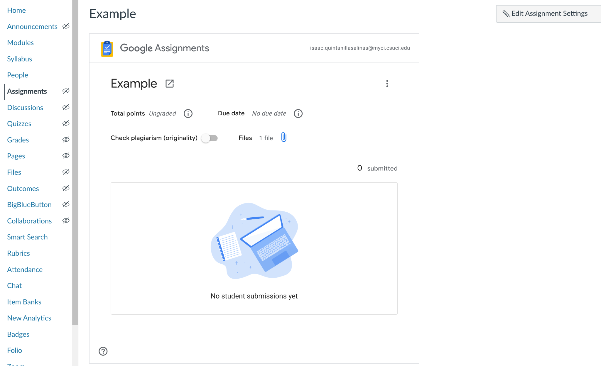
19.7 Problems with Google Colab
- Google Colab has implemented the use of Gemini AI into the notebooks. Instructors may find this problematic where they want students to learn how to code with out the help of AI.
- Some students may have trouble accessing google assignments from their browsers. The solution is to have students access the assignment on a chromium-based browser.